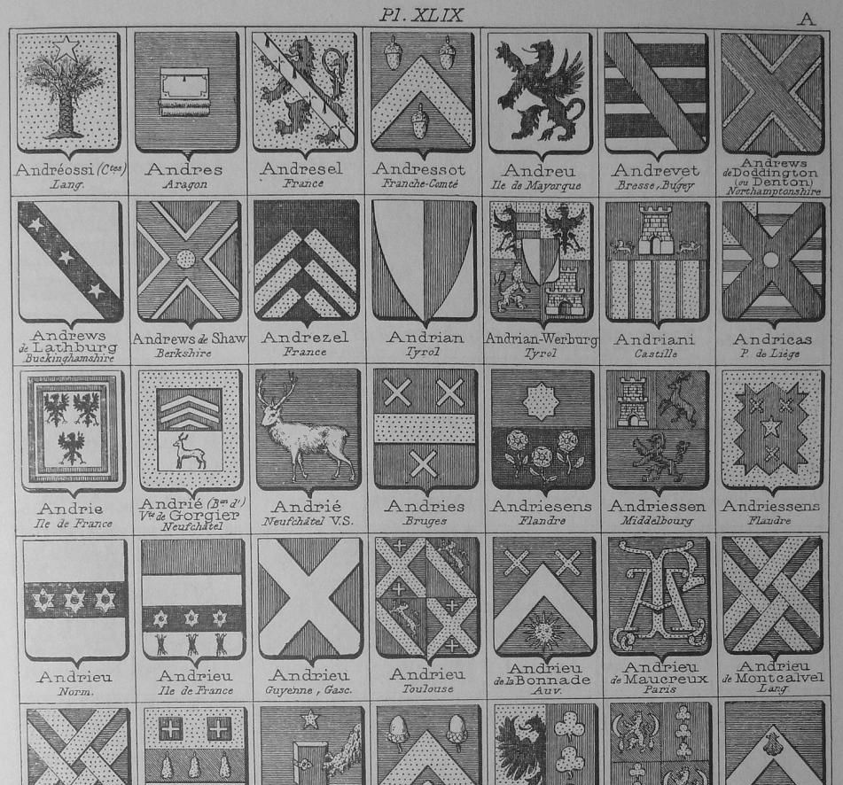
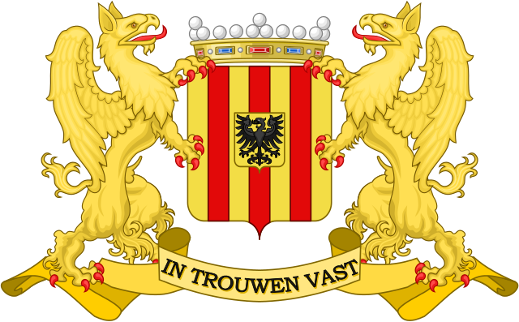
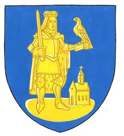
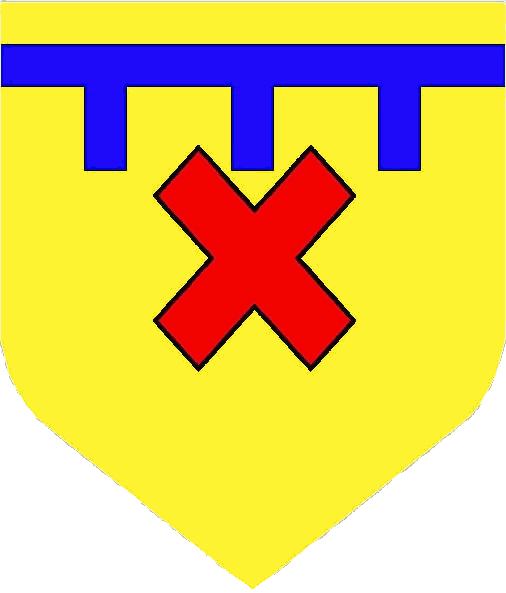
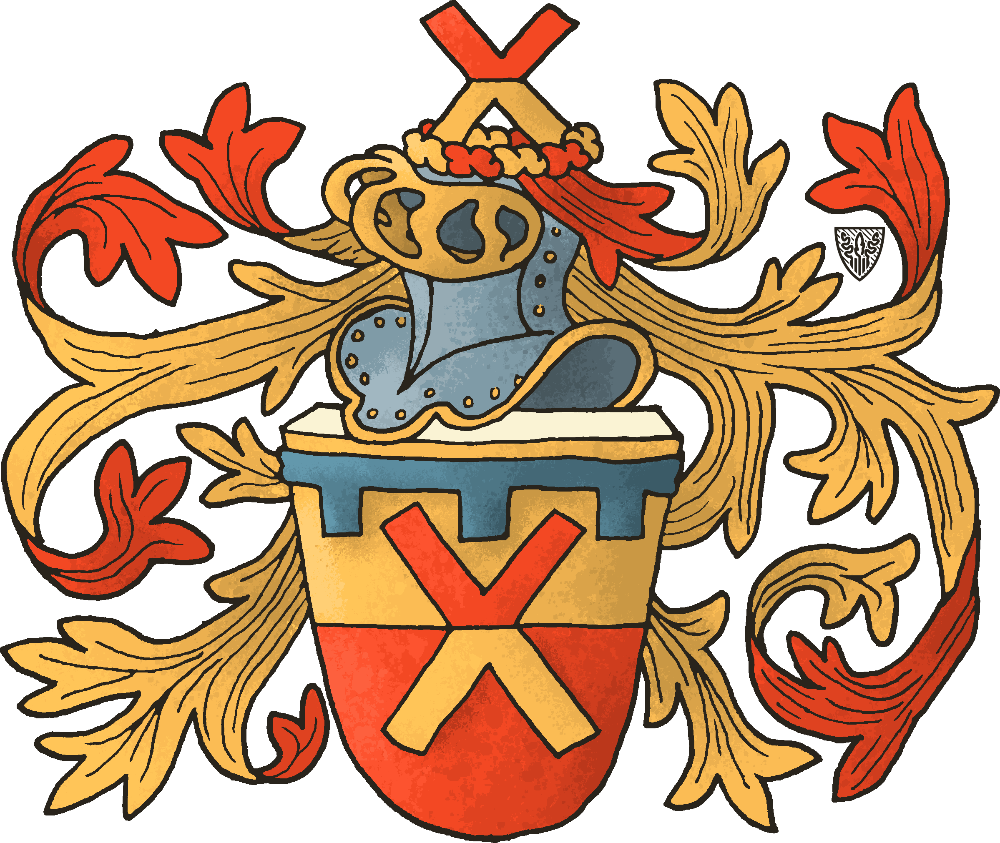

Ontwerp van een eigen wapen
Resultaat:
Blazoen: doorsneden van goud en van keel, een Sint-Andrieskruisje van het een in het ander, boven vergezeld van
een beide schildranden rakende barensteel met 3 rechte hangers van azuur.
Het schild getopt met een helm van zilver, getralied, gehalsband en omboord van goud,
gevoerd en gehecht van keel, met wrong en dekkleden van keel gevoerd van goud.
Helmteken: een Sint-Andrieskruisje van het schild doorsneden van keel en goud.
Verklaring:
ANDRIESSEN : ontstaan/betekenis: "Andries-zoon" (patroniem),
best een 'sprekend wapen' kiezen (Eng.:'canting arms', Fr.: 'armes parlantes', de afbeelding verwijst naar de naam van de drager) :
Andries Andreas: Sint-Andreaskruis, Sint-Andrieskruis , schuinkruis, St.-Andreas-cross , saltire ,sautoir ,
schuinkruisje, Sint-Andrieskruisje , saltorelle , small saltire , small St.-Andreas-cross , flanchi
(zie: het schuinkruis in de heraldiek)
In het bekende wapenboek (armorial) Rietstap staan enkele voorbeelden van historische wapens die ooit toebehoorden aan naamgenoten die ook gebruik maken van dit Sint-Andrieskruisje:
bv: Andries : Bruges. de gu(les), a la fasce d'or, acc(ompagnee). de trois flanchis d'arg(ent). ou: de gu a trois flanchis d'arg, et une bord d'or (V. Andriessens)
(van keel (= rood), een dwarsbalk van goud, vergezeld van 3 Sint-Andrieskruisjes van zilver. of: van keel met 3 Sint-Andrieskruisjes van zilver, en een zoom van goud)
en ook: Andriessens : Flandre. de gu a une etoile d'or, acc de trois flanchis du meme; a la bord denchee du sec. (V. Andries)
(van keel (= rood), een ster van goud, vergezeld van 3 Sint-Andrieskruisjes van hetzelfde, een groot-uitgetande zoom van de tweede (kleur)).

zoon van : In de heraldiek was het gebruikelijk om het wapen van de (oudste) zoon te voorzien van een barensteel (Eng.:label, Fr.:lambel) om zo een onderscheid te maken met het wapen van de vader. (zie Google: 'label heraldry', 'mark of difference', 'mark of cadency', 'brisure')
Een barensteel kan daarnaast ook gebruikt worden als een op zichzelf staand stuk (charge) op een wapenschild. Het behoort tot de groep van de heraut-(neven)stukken (sub-ordinaries).
In de loop van de tijd zijn er enkele verschillen ontstaan: horizontale band over heel de breedte of verkorte vorm (truncated), met rechte of met zwaluwstaart-vormige hangers (dovetailed).
Standaard heeft de barensteel drie hangers, maar bv. vijf of zeven komt ook voor. Bijna altijd wordt de barensteel in het schildhoofd geplaatst.
Om het geheel strak geometrisch te houden, heb ik gekozen voor een barensteel van rand tot rand, en voorzien van drie rechte hangers.
(zie: de barensteel in de heraldiek)
kleuren: Om de kleuren te kiezen ben ik vertrokken van de twee gemeenten waar onze familie een band mee heeft: Enerzijds de stad Mechelen (waar ik ben opgegroeid bij mijn ouders) en anderzijds de gemeente Wilrijk (waar ik en mijn kinderen geboren zijn en waar ik woon).
 
Mechelen: van goud met drie palen van keel, een hartschild van goud met een éénkoppige adelaar met gespreide vleugels in sabel.
Wilrijk: van (l)azuur beladen met St Bavo(n) van goud.
Op deze manier kom ik dus uit op de kleuren keel en azuur (rood en blauw) en het metaal goud (geel).
Rekening houdend met de regel van de kleuren (zoek op 'rule of tincture': geen kleur op kleur of metaal op metaal.) is het enkel mogelijk om het veld in goud te nemen,
en de twee kleuren er boven op.
(Een veld in bv. keel (rood) zou betekenen dat ofwel het kruis ofwel de barensteel in azuur zou moeten zijn, waardoor kleur op kleur zou ontstaan.)
Ik heb gekozen om het Sint-Andrieskruisje in keel (rood) te nemen en de barensteel (label) in azuur (blauw).
Dit gaf uiteindelijk het volgende resultaat:

Bij navraag bij het Heraldisch College kreeg ik echter als eerste reactie dat dit wapen nooit zal aanvaard worden. Volgens Michel Louwette, secretaris (over mijn voorstel):
"Het wapen wordt als volgt omschreven :
“In goud een geknot schuinkruis van keel getopt met een barensteel van lazuur”.
De familie Courtois voert dit wapen ”in goud een (geknot) schuinkruis van keel“.
De barensteel van lazuur die u eraan toevoegt is een breuk zeggende ik ben de zoon van Courtois.
Dus dit voorstel kan niet."
Ik zie inderdaad in Rietstap staan:
Courtois — Flandre (An., 28 mars 1675 et 7 Janv. 1676.) D'or au saut_ alésé de gu. C.: le saut., entre un vol, d'or et de gu.
(van goud, een verkort schuinkruis van keel. Helmteken: het schuinkruis, tussen een vlucht van goud en van keel.)
Ik weet niet of dit voldoende reden is om mijn voorstel daarom niet te aanvaarden, maar ik heb toch een aangepast ontwerp gemaakt.
Dit gaf het volgende eindresultaat:
Wat de omschrijving (blazoenering) betreft, denk ik dat het schuinkruis dat ik wil, beter kan omschreven worden als een 'schuinkruisje' of 'Sint-Andrieskruisje' (flanchi)
en niet als een 'verkort schuinkruis' of 'verkort Sint-Andrieskruis'.
(zie: het schuinkruis in de heraldiek)
 .png)
grafisch ontwerp door heraldisch tekenaar (Milan C."bongo"), daarnaast mijn ontwerp getekend met Drawshield.net van Karl Wilcox.